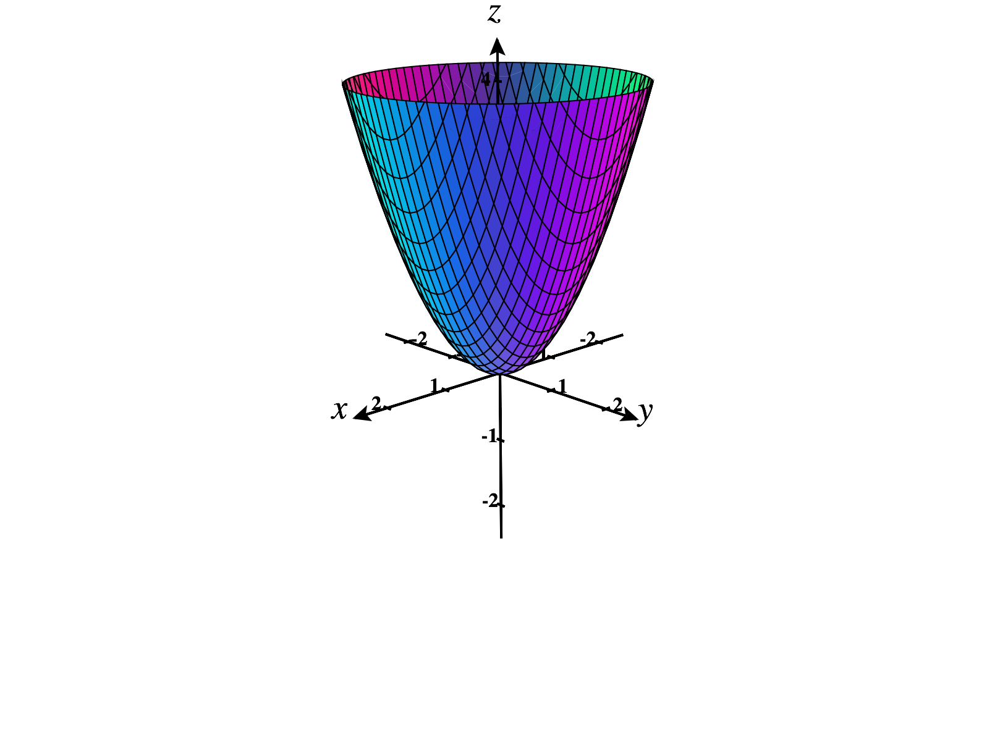
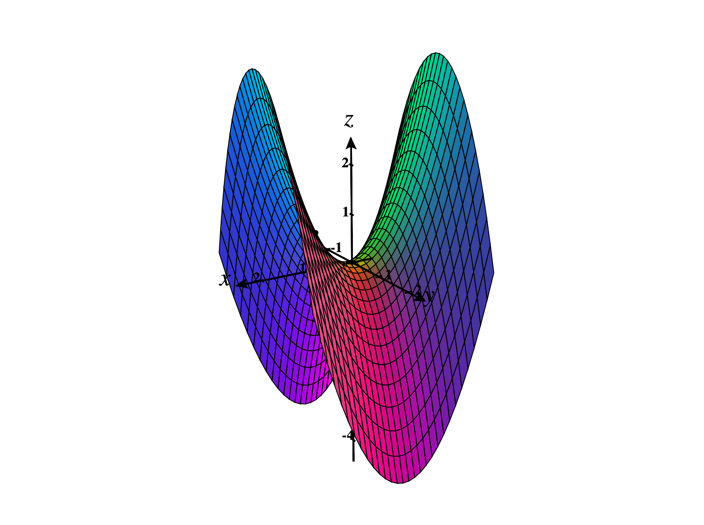
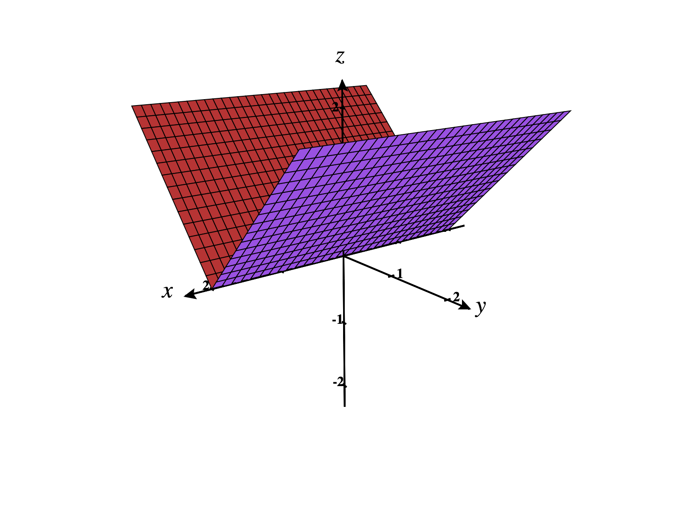

Now that we’ve defined the Hessian matrix and studied quadratic forms, we’re in
position to find local extrema of multivariable function. This process will closely
resemble the process that we following in single variable calculus, so we’ll begin by
reviewing that case.
Recall that we say has a local maximum at if for all near . Similarly, has a local
minimum at if for all near . We can state these definitions more precisely, as
below.
We say that has a
local maximum at if there exists such that implies
.
We say that has a local minimum at if there exists such that implies
.
In single variable calculus, we found local extrema by finding critical points, and then
classifying them using the first or second derivative test.
The point is a
critical point of if , or if does not exist.
If has a local minimum or maximum at , then is a critical point of .
If is a critical point of and , then has a local maximum at .
If is a critical point of and , then has a local minimum at .
If is a critical point of and or does not exist, then could have a local maximum at
, a local minimum at , or neither.
As an example, we’ll find the local extrema of the function . Differentiating, we have
Solving for , we see that there are two critical points, and .
We’ll classify these critical points using the second derivative test. We find the second
derivative of . Plugging in , we have This tells us that at , has a
local maximum. local minimum. neither.
Plugging in , we have This tells us that at , has a
local maximum. local
minimum. neither.
Local extrema for multivariable functions
We begin by defining local minima and local maxima for multivariable functions.
These follow the same idea as in the single variable case. For example, has a local
minimum at if for “near” . Now, we need to decide what “near” means. This means
that we can find some distance such that for within distance from , we must have .
We restate this more formally.
We say that has a
local minimum at if there exists such that for all with , we have
.
We say that has a local maximum at if there exists such that for all with , we have
.
In some cases, we can determine local extrema using our knowledge about functions,
and without using Calculus.
Consider the function . Since the terms and are always nonnegative, we
can see that will always be nonnegative. Since , and for all , this means
that has a local minimum at . (This local minimum is also an absolute
maximum.)
Consider the function . Since , we’ll always have . Then, since , has a local maximum
at .
Critical points
Our definition of critical points of multivariable functions is also very similar to the
definition from single variable calculus. Here, the gradient vector replaces the
derivative.
We say that has a
critical point at if , or does not exist.
For functions , we can visualize critical points as points where the tangent plane is
either horizontal, or undefined. Each of the graphs below has a critical point at
.
  
As in single variable calculus, if a function has local extrema, they will occur at
critical points.
If has a local maximum or local minimum at , then is a critical point of
.
We’ll find the critical points of the function . The gradient of is This is defined at all
points in , so the critical points will satisfy . In order to find the critical points, we
solve the system of equations Factoring the first equation, we have , giving us the
cases or .
If , the second equation gives us . So is a critical point.
If , plugging into the second equation gives us , so or . This gives us the critical
points and .
Thus, the critical points of are , , and .
Classifying critical points
Analogous to the second derivative test from single variable calculus, we can use the
Hessian matrix to classify critical points in some cases.
Suppose has continuous second order partial derivatives (so has ) at and near a
critical point .
- If is positive definite, then has a local minimum at .
- If is negative definite, then has a local maximum at .
- If is indefinite, then has a saddle point at .
Consider again the function . Earlier, we found the critical points of this function,
which are , , and . In order to classify these critical points, we find the Hessian matrix
of . Plugging in the point , we have Using Sylvester’s Theorem, we can see that is
positive definite. negative definite. indefinite. we cannot determine this using
Sylvester’s Theorem.
This means that, at , has a
local maximum. local minimum. saddle point. none of the above.
Next, we’ll classify the critical point . We find the Hessian matrix at this point,
Using Sylvester’s Theorem, we can see that is
positive definite. negative
definite. indefinite. we cannot determine this using Sylvester’s Theorem.
This means that, at , has a
local maximum. local minimum. saddle point. none of the above.
Finally, we’ll classify the critical point . We find the Hessian matrix at this point,
Using Sylvester’s Theorem, we can see that is
positive definite. negative
definite. indefinite. we cannot determine this using Sylvester’s Theorem.
This means that, at , has a
local maximum. local minimum. saddle point. none of the above.